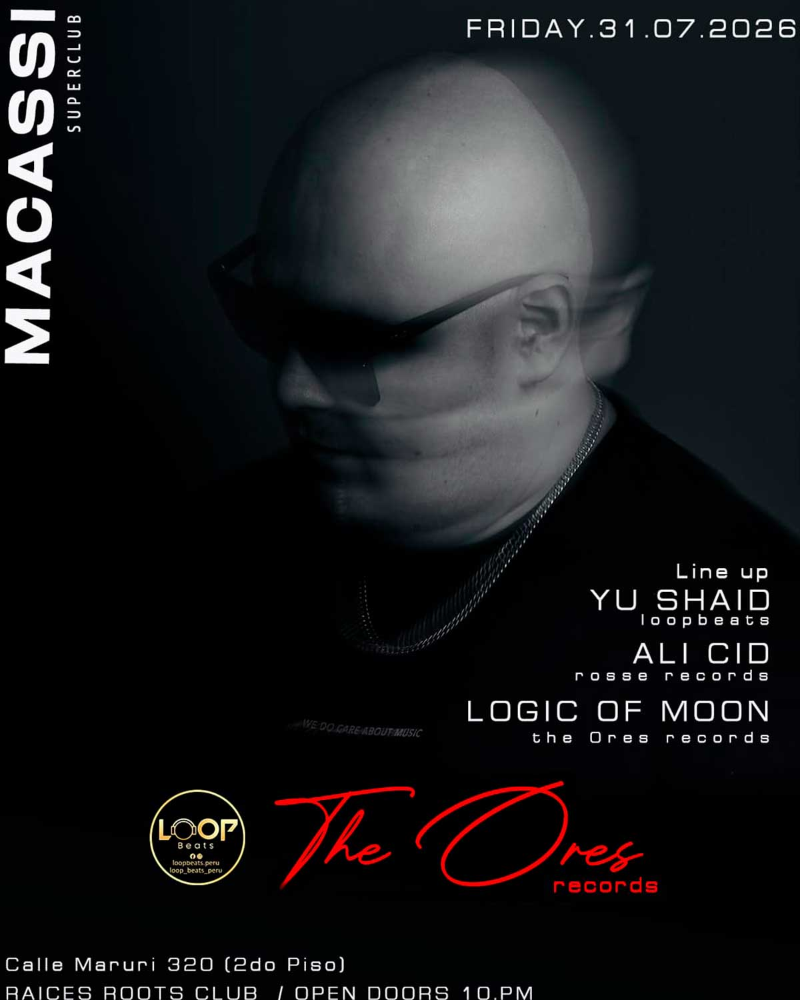

MACASSI
fecha: 31/07/26 hora: 10pm
lugar: Raices Roots Club,
Calle Maruri 320 (2do piso), Cusco


La Ciudad Imperial se prepara para recibir una experiencia sonora sin precedentes. Este viernes 31 de julio, The Ores Records rompe el silencio y presenta en exclusiva a uno de los Dj top más esperados.
MACASSI💥
From Super club
Support djs:
Yu Shaid (Loop Beats)
Ali Cid (Rosse Records)
Logic of Moon (The Ores Records)
Local: Raíces roots, calle Maruri 320 (2do piso)
#macassi #electronicmusic #ravecusco #dancemusic #cuscofest
LINE-UP:
Macassi
Yu Shaid
Ali Cid
Logic of Moon